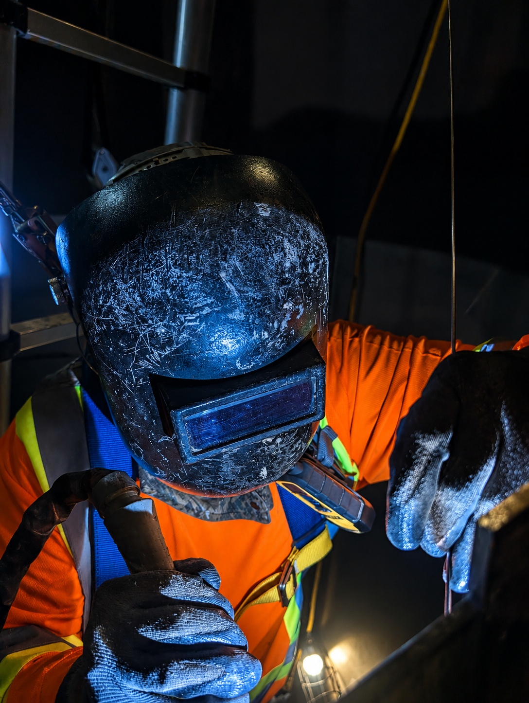
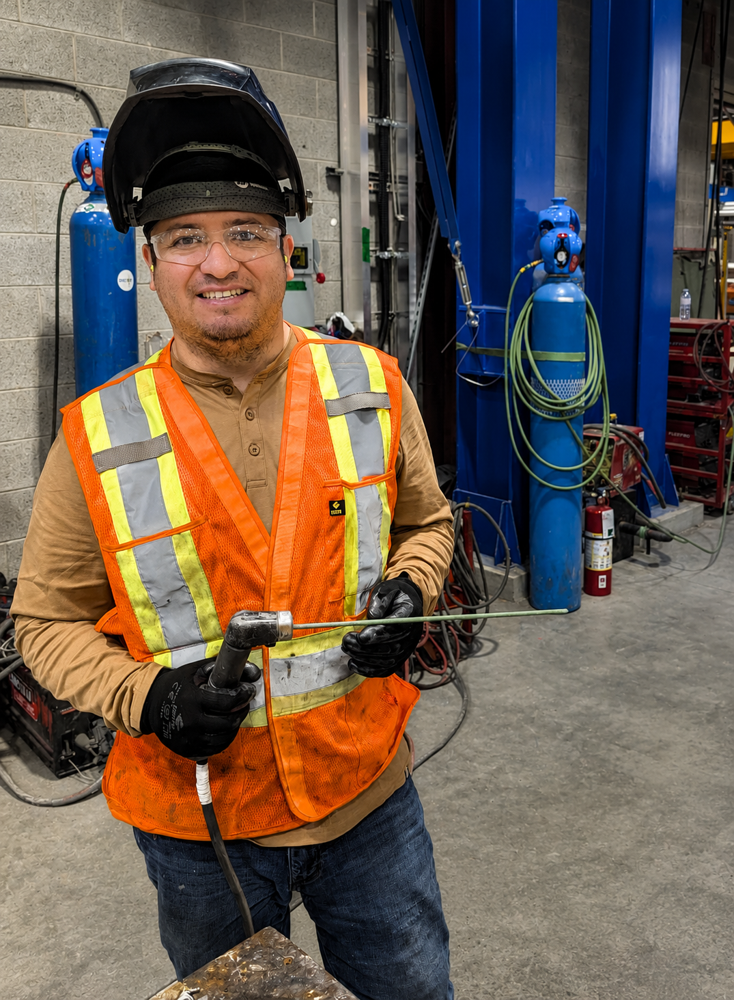
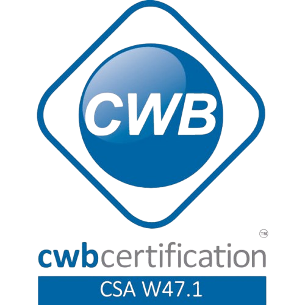
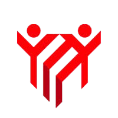
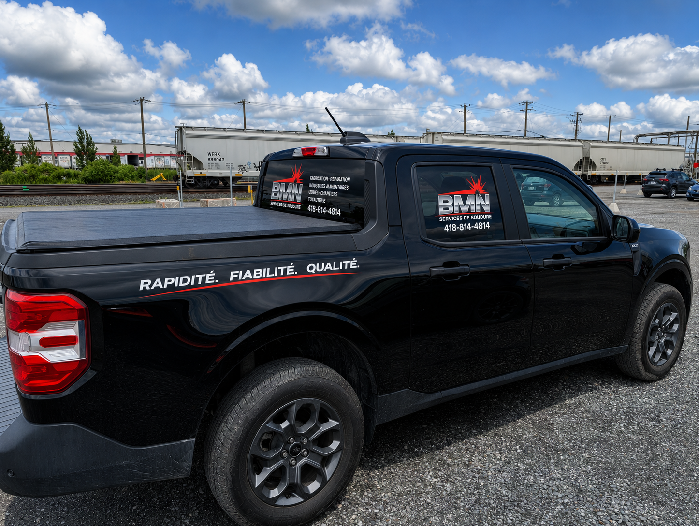

Construisons ensemble
Parlons de votre prochain projet ?
Chez BMN Services de Soudure, chaque nouveau défi est une opportunité de démontrer notre expertise et notre passion.

Qui nous sommes
BMN Services de Soudure est né avec la mission d'offrir des solutions métalliques robustes et précises. Aujourd'hui, nous sommes une équipe engagée envers la qualité et l'innovation.

20+
Années d'expérience
Le fondateur
Fort de plus de 20 ans d'expérience en soudage industriel, le fondateur de BMN Services de Soudure a développé son expertise dans les secteurs minier, manufacturier, forestier, agroalimentaire et industriel.
Grâce à une formation continue et à un engagement constant envers la qualité, la sécurité et la précision, chaque projet est réalisé selon les plus hauts standards de l'industrie québécoise.
Certifications reconnues


Notre processus
Chaque projet est réalisé selon une méthode structurée afin de garantir la qualité, la sécurité et le respect des délais.
Nous étudions vos besoins, les contraintes techniques et les objectifs afin de proposer la meilleure solution.
Nous préparons les matériaux, les équipements et les ressources nécessaires pour assurer une exécution optimale.
Nos soudeurs certifiés réalisent les travaux avec précision, sécurité et selon les normes de qualité les plus élevées.
Chaque réalisation est inspectée avant la livraison afin de garantir un résultat durable et conforme aux attentes du client.
Nous réalisons des projets de soudure industrielle avec professionnalisme, précision et un engagement constant envers la sécurité et la qualité.
À propos de BMN
Basée à Thetford Mines, BMN Services de Soudure accompagne les entreprises avec des solutions de soudage industriel, de fabrication métallique et de montage, réalisées selon les plus hauts standards de qualité, de sécurité et de précision.
BMN Services de Soudure est une entreprise québécoise située à Thetford Mines qui dessert la région et les environs. Notre équipe est composée de travailleurs qualifiés et passionnés, reconnus pour leur expertise, leur professionnalisme et leur engagement envers la qualité.
Nous proposons des services de soudure industrielle adaptés aux besoins des secteurs minier, forestier, alimentaire, manufacturier et agro-industriel, en réalisant chaque projet avec précision, sécurité et efficacité.
Années d'expérience
Secteurs industriels desservis
Engagement qualité
Vision d'avenir
Offrir des services de soudure industrielle de haute qualité en alliant sécurité, précision et professionnalisme. Notre mission est de répondre efficacement aux besoins des industries minières, forestières, alimentaires, manufacturières et agro-industrielles grâce à une équipe compétente et des méthodes de travail rigoureuses.
D'ici 2030, notre ambition est de devenir une référence incontournable dans le domaine du soudage industriel au Québec. Nous souhaitons nous distinguer par l'excellence de nos services, notre capacité d'innovation, notre amélioration continue et les relations de confiance durables que nous bâtissons avec chacun de nos clients.

Service mobile
Grâce à notre unité mobile entièrement équipée, nous pouvons intervenir directement sur votre site afin d'évaluer vos besoins, proposer une soumission précise et effectuer les réparations sur place, réduisant ainsi les délais d'arrêt de vos opérations.
Déplacement directement sur votre chantier ou dans vos installations.
Analyse de votre projet et estimation claire avant les travaux.
Réparations de qualité, où que vous soyez
Construisons ensemble
Chez BMN Services de Soudure, chaque nouveau défi est une opportunité de démontrer notre expertise et notre passion.